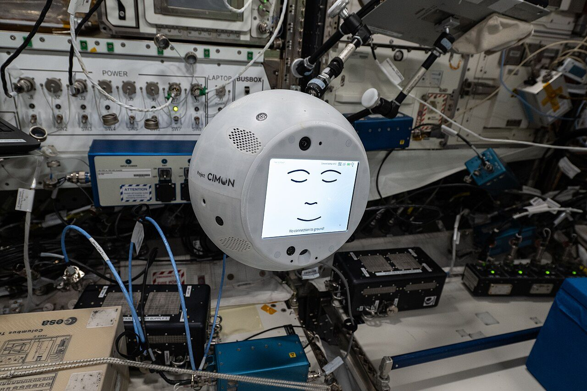
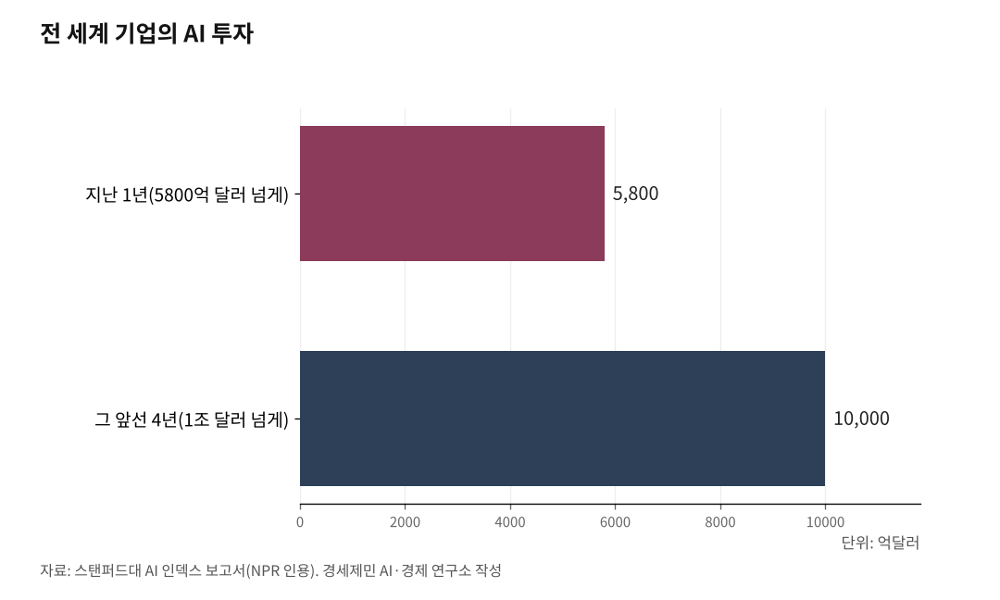

[주간 AI 칼럼] 2026년 6월 (통합본)
AI 빅테크 4169조원 증발…'거품이냐 조정이냐'
6월 한 달 빅테크 시총 2조7000억 달러 증발, 코스피도 '검은 화요일'
애플은 시리를 구글 AI로 다시 만들고 클로드·챗GPT에도 문 열어
한국은 1월 'AI 기본법' 시행, 규제와 진흥 함께 시험
AI경제저널=김갑봉 기자 | 2026년 6월, 인공지능(AI)에 큰일이 두 가지 겹쳤다. 그 AI에 쏟아부은 돈이 정말 수익이 될지 시장이 처음으로 크게 의심했다. 동시에 AI가 우리가 날마다 쥐는 스마트폰 안으로 내려왔다.

기대와 의심이 한 달에 같이 터졌다. 같은 시기 한국은 1월 시행한 'AI 기본법'으로 빨라지는 AI를 법으로 다스리는 시험에 들어갔다. 6월 한 달을 한자리에 모았다.
AI 주식, 4169조원 사라졌다
증시가 먼저 흔들렸다. 파이낸셜뉴스는 6월 한 달 AI 빅테크 시가총액에서 약 2조7000억 달러(약 4169조원)가 사라졌다고 보도했다. 엔비디아, 알파벳, 마이크로소프트, 아마존, 메타, 애플, 테슬라에 브로드컴과 오라클이 하락 대열에 들었다.
시가총액은 회사 주식을 모두 더한 값, 곧 회사 몸값이다. 그동안 주가 상승이 이 몇몇 회사에 쏠렸다. 그만큼 이들이 흔들리자 충격이 컸다.
국내도 컸다. YTN은 6월 23일 코스피가 10% 가까이 폭락해 9000선에서 8200선으로 밀렸다고 전했다. 거래를 잠시 멈추는 서킷브레이커와 사이드카가 발동했다. 삼성전자와 SK하이닉스는 장중 한때 12%가량 함께 빠졌다.
헤럴드경제는 많이 오른 반도체주에 차익 실현 매물이 쏟아졌고, 미국 마이크론 실적 발표를 앞둔 경계가 겹쳤다고 분석했다.

거품이냐 조정이냐
흔들림을 잘 보여준 종목이 미국 반도체 회사 마이크론이다. NPR은 6월 23일 마이크론이 하루 13% 넘게 빠졌고 나스닥지수는 2% 넘게 내렸다고 전했다. 마이크론은 AI용 메모리 수요로 지난 1년 주가가 800% 가까이 올랐던 종목이다. 많이 오른 만큼 빠지는 폭도 컸다.
거품 논쟁이 붙었다. NPR은 시장이 'AI가 생산성을 크게 높인다'는 기대와 'AI는 큰 거품'이라는 의심 사이를 오간다고 전했다. 투자회사 디에이데이비드슨의 길 루리아 기술리서치 책임자는 두 시각 사이에서 시장이 계속 흔들린다고 NPR에 말했다.
반대로 단순한 조정이라는 시각도 있다. 헤럴드경제와 YTN은 그동안 주가가 워낙 많이 올라 차익을 실현하려는 매물이 한꺼번에 나온 것이라고 분석했다.
투자 규모는 막대하다. NPR이 인용한 스탠퍼드대 AI 인덱스 보고서를 보면, 지난 1년 전 세계 기업의 AI 투자는 5800억 달러를 넘었다. 그 앞선 4년간은 1조 달러가 넘게 들어갔다. 파이낸셜뉴스는 다음 달 2분기 실적에서 빅테크가 막대한 투자비를 메울 수익성을 증명해야 한다고 했다.
시리, 구글 AI로 다시 났다
같은 달, AI는 우리 손안으로도 내려왔다. 애플이 음성비서 시리를 처음부터 다시 만들었다. 6월 8일(현지시간) 미국 세계개발자대회에서 새 시리를 공개했다. 그동안 시리는 날씨를 묻거나 알람을 맞추는 수준에 머물렀다. 챗GPT 같은 대화형 AI에 한참 뒤졌다는 평가를 받았다.
핵심은 시리의 두뇌를 구글에서 빌려 온 점이다. 애플은 구글이 만든 대화형 AI '제미나이'를 가져다 시리를 움직인다. 기술을 스스로 만들어 온 애플로서는 큰 방향 전환이다.
블룸버그는 애플이 시리 전용 제미나이를 쓰며 사용료로 한 해 약 10억 달러(약 1조5400억원, 2026년 6월 24일 환율 기준)를 낸다고 보도했다. 두 회사는 정확한 금액을 공개하지 않았다. 세계에서 가장 값나가는 기업조차 핵심 AI를 혼자 만들지 않고 경쟁사 기술을 빌렸다.
아이폰서 AI 골라 쓴다
애플은 시리를 한 회사 AI에만 묶지 않았다. 새 아이폰에는 시리가 쓰는 AI를 사용자가 직접 고르는 '익스텐션(확장 기능)'이 들어간다. 그동안 애플은 챗GPT 한 곳하고만 손잡았다. 이제 여러 AI에 문을 연다.
사용자는 애플 자체 AI 대신 앤트로픽 클로드, 오픈AI 챗GPT, 구글 제미나이 가운데 하나를 고른다. 긴 글을 줄이거나 문자 답장을 대신 쓸 때 고른 AI가 그 일을 맡는다.
애플 기기는 전 세계에서 25억 대 넘게 쓰인다. AI 회사로서는 앱을 따로 깔게 하지 않고도 이 많은 기기에 곧장 들어갈 길이 열린다. 클로드가 아이폰에 들어갈 길이 열린 건 처음이다. 거대한 아이폰 시장을 두고 AI 회사들이 자리를 다툰다.
다만 이 기능은 8일 발표 무대에선 공개되지 않았다. 앞서 5월 외신들이 새 운영체제 정보에서 확인해 보도했다. 어느 AI를 언제 정식으로 열지는 정해지지 않았다.
최강 AI, 사흘 만에 막혔다
AI 회사들은 새 모델도 줄줄이 내놨다. 앤트로픽은 6월 9일 '클로드 페이블 5'를 일반에 공개했다. 일반에 내놓은 모델 가운데 성능이 가장 높다고 밝혔다.
사흘 만에 일이 틀어졌다. 앤트로픽은 6월 12일 미국 정부의 수출통제 지시에 따라 페이블 5와 미토스 5 접속을 전면 중단했다. 앤트로픽은 공개 당시 안전장치가 없으면 이 모델의 사이버 보안 능력이 큰 피해에 악용될 수 있다고 스스로 밝혔다. 두 모델은 6월 24일까지도 멈춰 있다.
마이크로소프트도 이달 초 자체 개발 AI 일곱 개를 공개했다. 오픈AI 의존을 줄이겠다는 뜻이다.
한국, AI 법을 시행했다
한국은 제도로 맞섰다. 1월 22일 'AI 기본법'을 시행했다. AI 전반을 다루는 법은 유럽연합(EU)에 이어 세계 두 번째다. 그러나 실제 전면 시행은 한국이 세계에서 처음이다.
법은 사람에게 큰 영향을 주는 AI를 '고영향 AI'로 따로 묶는다. 의료, 에너지, 채용, 대출 심사가 여기에 든다. 이런 AI를 제공하는 회사는 사람이 관리·통제하는 체계를 갖추고 안전성 조치를 마련해야 한다.
생성형 AI에는 표시 의무가 생겼다. AI로 만든 영상이나 목소리가 퍼질 때 'AI가 만들었다'고 알려야 한다. 국민을 가짜 정보에서 지키려는 장치다.
정부는 시행 초기 과태료를 최소 1년간 매기지 않고 계도만 한다고 밝혔다.
기대와 의심이 함께 왔다
6월은 두 흐름이 겹친 달이다. AI는 연구실을 나와 손안으로 내려왔다. 동시에 그 열기를 시장이 처음으로 크게 의심했다.
정부도 움직였다. 미국은 안보를 이유로 가장 강한 AI를 막았고, 한국은 법으로 AI를 다스리기 시작했다. 방식은 달라도 빨라지는 기술을 그냥 두지 않겠다는 뜻은 같다.
시민은 고를 거리가 늘었다. 머지않아 내 손전화에서 어떤 AI를 쓸지 스스로 정한다. 투자자에겐 시험이 남았다. 쏟아부은 돈이 이익으로 돌아오는지, 그 답은 2분기 실적이 보여준다.
참고문헌
· 「AI 빅테크, 6월 한 달 시총 4169조원 사라져…"막대한 투자 감당할까"」, 송경재, 파이낸셜뉴스, 2026.6.25., https://www.fnnews.com/news/202606250329123367
· 「[이슈플러스] '검은 화요일' 코스피 10%대 가까이 폭락...원인은?」, YTN, 2026.6.23., https://www.ytn.co.kr/_ln/0102_202606231921468037
· 「하루 만에 끝난 'SK하이닉스 천하'…코스피 급락 속 삼성전자 시총 1위 재탈환」, 김지윤, 헤럴드경제, 2026.6.23., https://biz.heraldcorp.com/article/10785297
· "Is AI 'one big bubble?' Behind the tech selloff", John Ruwitch, NPR, 2026.6.23., https://www.npr.org/2026/06/23/nx-s1-5867633/ai-selloff-tech-stocks-bubble-nasdaq
· "Hey, Siri: Apple just announced a long-awaited AI update", NPR, 2026.6.8., https://www.npr.org/2026/06/08/nx-s1-5847937/apple-wwdc-2026-siri-ai-tim-cook
· "Apple Plans to Use 1.2 Trillion Parameter Google Gemini Model to Power New Siri", Bloomberg, 2025.11.5., https://www.bloomberg.com/news/articles/2025-11-05/apple-plans-to-use-1-2-trillion-parameter-google-gemini-model-to-power-new-siri
· 「USD KRW 미달러 원 환율」, Investing.com, 2026.6.24. 확인, https://kr.investing.com/currencies/usd-krw
· "iOS 27 will let you choose between Gemini, Claude, and more for AI features: report", 9to5Mac, 2026.5.5., https://9to5mac.com/2026/05/05/ios-27-will-let-you-choose-between-gemini-claude-and-more-for-ai-features-report/
· "Apple reaches 2.5 billion active devices after record-breaking quarter", AppleInsider, 2026.1.29., https://appleinsider.com/articles/26/01/29/apple-reaches-25-billion-active-devices-after-record-breaking-quarter
· "Claude Fable 5 and Claude Mythos 5", Anthropic, 2026.6.9., https://www.anthropic.com/news/claude-fable-5-mythos-5
· "Statement on the US government directive to suspend access to Fable 5 and Mythos 5", Anthropic, 2026.6.12., https://www.anthropic.com/news/fable-mythos-access
· "Microsoft unveils new AI models to lessen reliance on OpenAI and lower costs for developers", CNBC, 2026.6.2., https://www.cnbc.com/2026/06/02/microsoft-unveils-new-ai-models-lessen-reliance-on-openai-lower-costs.html
· 「세계 최초 인공지능기본법 전면 시행, 무엇이 달라지나요?」, 정책브리핑, 2026.2.24., https://www.korea.kr/news/reporterView.do?newsId=148959404
· 「인공지능 발전과 신뢰 기반 조성 등에 관한 기본법」, 국가법령정보센터, https://www.law.go.kr/lsInfoP.do?lsiSeq=268543
· 「내년 1월 AI기본법 시행, 과태료 계도기간 최소 1년 이상」, 머니투데이, 2025.12.31., https://www.mt.co.kr/tech/2025/12/31/2025123009504430416
※ 이 칼럼은 AI 프로그램 클로드를 활용해 작성했습니다.
사진 출처
· [대표사진] NASA Johnson Space Center, "CIMON, an AI-powered robotic techology assistant, is pictured after being activated (iss073e0384104).jpg", 위키미디어 공용, 퍼블릭 도메인, https://commons.wikimedia.org/wiki/File:CIMON,_an_AI-powered_robotic_techology_assistant,_is_pictured_after_being_activated_(iss073e0384104).jpg
※ 이 기사는 인공지능을 활용해 작성했습니다.
관련기사
- [AI동향] 유엔, AI 함께 다스릴 틀 제네바서 첫 가동
- [AI동향] 정부 AI 예산 9조9000억원, 어디에 쓰이나
- [AI동향] '세계 AI 지배' 선언한 미국…강한 AI, 출시부터 통제
- [AI동향] AI 투자, 반도체와 데이터센터로 몰린다
저작권자 © AI경제저널 무단전재 및 재배포, AI학습 및 활용 금지